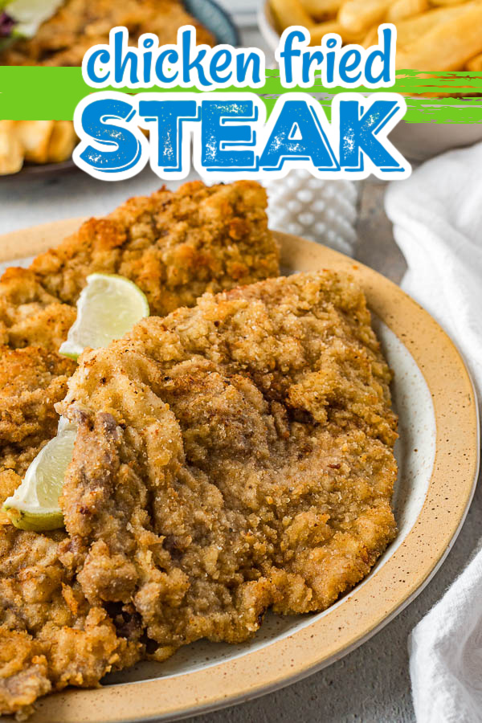

Chicken Fried Steak

Extra crispy chicken fried steak using carne asade.
This is a household favorite reserved for special occassions like birthdays or milestone celebrations. Over the years
we have tweaked and adjusted our family recipe to create the best chicken fried steak. The keys we have found are
a flavorful Italian bread crumb mixture and double dregging the steaks.
Ingredients
- Carne asade beef 1 lb
- Italian seasoned bread crumbs 2 cups
- Eggs 2
- Frying oil - recommend vegtable or canola oil 2 cups
Steps
- Heat a saute pan with about an inch of oil to medium high heat.
- While waiting for the oil to get to temperature, prepare one bowl with whisked eggs and one with
bread crumbs.
- Dredge the steaks by dipping them into the egg mixture and then the bread crumb mixture.
- For an extra crispy crust repeat the dredging process so that you have coated each piece twice.
- Once the oil is up to temperature, place 1-3 pieces of the dredged steak into the oil depending
on size of the pan.
-
- Cook each round of steaks for 2-3 minutes per side depending on thickness.
- Place fried steaks on paper towels to remove excess grease.